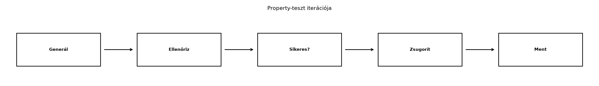

C++-ban a tesztelés gyakran kézzel kiválasztott példákkal történik,
legfeljebb néhány véletlen értékkel. A property-alapú tesztelés – vagyis
olyan tulajdonságok megfogalmazása, amelyek minden lehetséges bemenetre
igazak – csak külső könyvtárakkal érhető el. A mikrobenchmarkoknál
hasonló a helyzet: a fejlesztő std::chrono-val mér, de a
fordító optimalizálása és a mérési zaj miatt a kapott szám gyakran
félrevezető. A Rust ökoszisztéma ezt a két problémát a
proptest és a criterion crate-ekkel oldja meg:
a property-teszt generátorokkal és zsugorítással találja meg a hibás
bemeneteket, a criterion pedig statisztikailag megalapozott mérést
ad.
Definíció. A property-alapú tesztelés (property-based testing) során nem konkrét bemenetekre írunk tesztet, hanem egy invariánst fogalmazunk meg, amelynek a bemenetek egy meghatározott tartományán teljesülnie kell. A keretrendszer ebből a tartományból véletlen mintákat generál (alapértelmezés szerint tesztenként 256-ot), ellenőrzi az invariánst, és ha talál egy ellenpéldát, zsugorítással (shrinking) a generátor stratégiáján belül egyszerűbb ellenpéldát keres. Ez erős hibakereső eszköz, de nem bizonyítás: a minta mérete és eloszlása korlátozza, mit talál meg.
Szabály. A proptest a
proptest! makróval definiált tesztfüggvényeket futtatja. A
generátorokat a Strategy trait írja le; a leggyakoribb
beépített stratégia az any::<T>(). Ha egy teszt
elbukik, a proptest automatikusan menti a hibás bemenetet
egy regressziós fájlba (alapértelmezés szerint a
proptest-regressions könyvtárba), hogy a hiba
reprodukálható legyen.
Definíció. A benchmark egy kód futási
idejének ismételt, statisztikailag értelmezhető mérése. A
criterion (0.8) a futási időre
time: [alsó becslés felső] sort ír: ez a 95%-os
konfidenciaintervallum alsó és felső határa és a pontbecslés (a minták
átlagos futási idejére, bootstrap alapján). A 95% ismételt mintavételi
lefedettséget jelent: ha a mérést sokszor megismételnénk, az így számolt
intervallumok kb. 95%-a tartalmazná a valódi értéket; nem azt, hogy egy
adott intervallumban 95% valószínűséggel van az érték. A riport emellett
jelzi a kilógó mérések számát (Found N outliers) és az
előző futáshoz képesti változást (change:).
Szabály. A benchmarkban a mért kód bemenetét és
kimenetét black_box-ba kell csomagolni, különben a fordító
kioptimalizálhatja a mért számítást, így a mérés hamis eredményt ad. A
std::hint::black_box az 1.66 óta stabil; a
criterion::black_box a criterion 0.8-ban
elavult (a fordító
use of deprecated function criterion::black_box
figyelmeztetést ad), ezért a std::hint::black_box-ot
használjuk. A cargo bench alapértelmezés szerint release
módban fut, ami a valós produkciós teljesítményt közelíti.
C++-ban a standard könyvtár nem tartalmaz property-alapú tesztelést; a leggyakoribb kézi megoldás csak néhány beépített értéket használ, és nem ad automatikus zsugorítást. Harmadik féltől származó keretrendszerek (például a rapidcheck vagy a Google FuzzTest) viszont kínálnak generálást és zsugorítást is, tehát a hiány nem nyelvi, hanem az alapkönyvtár szintjén jelentkezik:
#include <cassert>
#include <random>
#include <unordered_map>
#include <string>
int main() {
std::mt19937 rng(42);
std::uniform_int_distribution<int> dist(0, 9);
std::unordered_map<std::string, std::string> map;
for (int i = 0; i < 100; ++i) {
auto key = "k" + std::to_string(dist(rng));
auto value = "v" + std::to_string(dist(rng));
map[key] = value;
assert(map[key] == value);
}
return 0;
}Ez a teszt ugyanazt a beszúrás–visszaolvasás tulajdonságot ellenőrzi
néhány kézzel választott értékre (egy invariáns példa-alapú vizsgálata);
a különbség nem az, hogy a C++ teszt nem fogalmaz meg tulajdonságot,
hanem hogy a beépített eszköztárban nincs automatikus
generálás, zsugorítás és regressziókezelés – ezt C++-ban külső
könyvtárral (rapidcheck, FuzzTest) lehet pótolni –, így a kézi változat
hibája esetén nem segít megtalálni a minimális ellenpéldát. A Rust
proptest ezzel szemben deklaratívan írja le az invariánst,
és automatikusan zsugorít:
use proptest::prelude::*;
use rkv_core::{MemStore, Storage};
proptest! {
#[test]
fn set_then_get_returns_value(
key in any::<String>(),
value in prop::collection::vec(any::<u8>(), 0..64),
) {
let mut store = MemStore::new();
Storage::set(&mut store, key.clone(), value.clone()).unwrap();
prop_assert_eq!(Storage::get(&store, &key).unwrap(), Some(value));
}
}A prop_assert_eq! makró ugyanazt ellenőrzi, mint az
assert_eq!, de a proptest képes a generált
bemeneteket és a hibaüzenetet a teszt kontextusába illeszteni. A kulcsot
az any::<String>() stratégia generálja, az értéket (a
tároló Vec<u8> értéktípusához igazodva)
bájtvektor-stratégia; a stratégia hiba esetén mindkettőt zsugorítja. A
Storage::set(&mut store, ..) teljesen minősített hívás
azért kell, mert a MemStore inherens set-je
nem ad Result-ot, és elnyomná a trait metódusát.
A benchmark terén is hasonló a különbség. C++-ban a standard
könyvtárban csak a std::chrono áll rendelkezésre, a kézi
mérés:
#include <chrono>
#include <unordered_map>
#include <string>
int main() {
using Clock = std::chrono::high_resolution_clock;
auto start = Clock::now();
std::unordered_map<std::string, std::string> map;
for (int i = 0; i < 1000; ++i) {
map[std::to_string(i)] = "value";
}
auto end = Clock::now();
auto ns = std::chrono::duration_cast<std::chrono::nanoseconds>(end - start).count();
// Probléma: a fordító optimalizálhat, a mérés túl rövid, a cache-hatás torzít.
}A Rust criterion ezt megoldja a statisztikai elemzéssel
és a black_box-szal:
use std::hint::black_box;
use criterion::{criterion_group, criterion_main, Criterion};
use rkv_core::{MemStore, Storage};
fn bench_get(c: &mut Criterion) {
let mut store = MemStore::new();
Storage::set(&mut store, "key".to_string(), b"value".to_vec()).unwrap();
c.bench_function("MemStore::get (hit)", |b| {
b.iter(|| black_box(Storage::get(&store, black_box("key")).unwrap()));
});
}
criterion_group!(benches, bench_get);
criterion_main!(benches);A black_box (a std::hint::black_box, stabil
az 1.66 óta) megakadályozza, hogy a fordító kioptimalizálja a
get hívását vagy az eredmény felhasználását. A C++ oldalon
a Google Benchmark nyújt hasonló statisztikai elemzést és
DoNotOptimize-ot, de ez külső könyvtár, nem része a nyelvi
szerződésnek vagy a standardnak.
A laborban az rkv workspace rkv-core crate-jéhez adunk
property-tesztet és benchmarkot. A kiinduló állapot a Unit-, integrációs és dokumentációs tesztek
ellenőrzési pontja; az API a kanonikus Storage trait (Trait-ek és generikusok: sablonok és concepts
helyett): az érték Vec<u8>, a delete
Result<bool>, a list rendezett
(String, Vec<u8>) párokat ad. A tesztek a trait
metódusait teljesen minősítve hívják
(Storage::set(&mut store, ..)), mert a
MemStore inherens metódusai egyébként elnyomnák őket.
Kódblokk — fájl: rkv-core/Cargo.toml · művelet:
beillesztés a [dev-dependencies] szakaszba, új
[[bench]] szakasz a fájl végére · ellenőrzés:
cargo build -p rkv-core --tests --benches
proptest = "1"
criterion = "0.8"
[[bench]]
name = "benchmark"
harness = falseA harness = false azt jelenti, hogy a benchmarkot nem a
beépített tesztkeret futtatja, hanem a criterion saját
criterion_main! belépési pontja. (A
[dev-dependencies] szakasz már létezik az Unit-, integrációs és dokumentációs tesztek
alfejezetből; ide kerül a két új sor.)
Hozzuk létre az rkv-core/tests/storage_proptest.rs
fájlt:
Kódblokk — fájl:
rkv-core/tests/storage_proptest.rs · művelet: új fájl (a 4.
lépés kiegészíti) · ellenőrzés:
cargo test -p rkv-core --test storage_proptest
use std::collections::BTreeMap;
use proptest::prelude::*;
use proptest::test_runner::TestRunner;
use rkv_core::{MemStore, Result, Storage};
fn value_strategy() -> impl Strategy<Value = Vec<u8>> {
// Bináris értékek: tetszőleges bájtok, az üres is.
prop::collection::vec(any::<u8>(), 0..64)
}
proptest! {
#[test]
fn set_then_get_returns_value(key in any::<String>(), value in value_strategy()) {
let mut store = MemStore::new();
Storage::set(&mut store, key.clone(), value.clone()).unwrap();
prop_assert_eq!(Storage::get(&store, &key).unwrap(), Some(value));
}
#[test]
fn delete_after_set_removes_the_key(key in any::<String>(), value in value_strategy()) {
let mut store = MemStore::new();
Storage::set(&mut store, key.clone(), value).unwrap();
prop_assert!(Storage::delete(&mut store, &key).unwrap()); // létezett
prop_assert_eq!(Storage::get(&store, &key).unwrap(), None);
prop_assert!(!Storage::delete(&mut store, &key).unwrap()); // már nem
}
}A set_then_get_returns_value invariáns a beillesztés és
a visszaolvasás konzisztenciáját fejezi ki; a
delete_after_set_removes_the_key a törlés helyességét
ellenőrzi, a Result<bool> mindkét értékével (létezett
/ már nem).
Futtassuk a tesztet:
cd ~/rust-labor/rkv
cargo test -p rkv-core --test storage_proptestVárható kimenet (rövidítve):
running 2 tests
test set_then_get_returns_value ... ok
test delete_after_set_removes_the_key ... ok
test result: ok. 2 passed; 0 failed; 0 ignored; 0 measured; 0 filtered outA proptest alapértelmezés szerint tesztenként 256
véletlen esetet próbál ki. A generált minta széles (az
any::<String>() sokféle hosszú és összetételű,
többbájtos Unicode szöveget állít elő, az értékek 0 és 63 bájt közötti
tetszőleges bájtsorozatok), de ez mintavétel, nem teljes lefedés és nem
bizonyítás: a 256 eset a bemeneti tér elenyésző része, és csak az
invariánsok megsértését keresi.
Többbájtos Unicode kulcsokra külön is érdemes tesztet írni (a
\PC reguláris stratégia nem vezérlő karaktereket generál),
és néhány kritikus esetet rögzített példával is ellenőrzünk:
Kódblokk — fájl: rkv-core/tests/unicode_keys.rs
· művelet: új fájl · ellenőrzés:
cargo test -p rkv-core --test unicode_keys → 2 sikeres
teszt
use proptest::prelude::*;
use rkv_core::{MemStore, Storage};
proptest! {
/// Többbájtos Unicode kulcsok is: a `\PC` a nem vezérlő karaktereket generálja.
#[test]
fn multibyte_keys_round_trip(key in "\\PC{1,8}", value in prop::collection::vec(any::<u8>(), 0..16)) {
let mut store = MemStore::new();
Storage::set(&mut store, key.clone(), value.clone()).unwrap();
prop_assert_eq!(Storage::get(&store, &key).unwrap(), Some(value));
prop_assert!(Storage::list(&store, Some(&key)).unwrap().iter().any(|(k, _)| *k == key));
}
}
#[test]
fn fixed_multibyte_keys() {
// Előre komponált és kombinált ékezet, CJK és emoji (4 bájtos): mind más kulcs.
let keys = ["árvíztűrő", "日本語", "😀", "\u{e9}", "e\u{301}"];
let mut store = MemStore::new();
for (i, key) in keys.iter().enumerate() {
Storage::set(&mut store, (*key).to_string(), vec![i as u8]).unwrap();
}
assert_eq!(Storage::list(&store, None).unwrap().len(), keys.len());
for (i, key) in keys.iter().enumerate() {
assert_eq!(Storage::get(&store, key).unwrap(), Some(vec![i as u8]));
}
}A zsugorítás szemléltetéséhez egy ideiglenes tárolótípus kell, amely
típusszinten teljesíti ugyanazt a Storage
traitet, és csak a tanítani kívánt viselkedésben tér el: a
get a 10 bájtnál hosszabb kulcsra mindig
None-t ad. Ezt a tesztfájlba tesszük, nem az rkv kódjába. A
teszt lefordul, és futás közben bukik meg
ellenpéldával; hogy a csomag tesztjei zöldek maradjanak,
#[ignore]-ral jelöljük, és külön kérésre futtatjuk.
Kódblokk — fájl: rkv-core/tests/buggy.rs ·
művelet: új fájl · szándékosan hibás viselkedés
(futásidejű bukás) · ellenőrzés:
cargo test -p rkv-core --test buggy -- --ignored → 1 bukott
teszt, zsugorított ellenpéldával
use std::collections::HashMap;
use proptest::prelude::*;
use rkv_core::{Result, Storage};
/// Szándékosan hibás tároló: csak a `get` hibás (11+ bájtos kulcsra mindig `None`).
struct BuggyStore {
map: HashMap<String, Vec<u8>>,
}
impl Storage for BuggyStore {
fn get(&self, key: &str) -> Result<Option<Vec<u8>>> {
if key.len() > 10 {
Ok(None) // szándékos hiba
} else {
Ok(self.map.get(key).cloned())
}
}
fn set(&mut self, key: String, value: Vec<u8>) -> Result<()> {
self.map.insert(key, value);
Ok(())
}
fn delete(&mut self, key: &str) -> Result<bool> {
Ok(self.map.remove(key).is_some())
}
fn list(&self, prefix: Option<&str>) -> Result<Vec<(String, Vec<u8>)>> {
let mut items: Vec<_> = self
.map
.iter()
.filter(|(k, _)| prefix.is_none_or(|p| k.starts_with(p)))
.map(|(k, v)| (k.clone(), v.clone()))
.collect();
items.sort();
Ok(items)
}
}
proptest! {
#[test]
#[ignore = "szándékosan hibás: futás közben ellenpéldával bukik"]
fn buggy_get_fails_for_long_keys(
key in any::<String>(),
value in prop::collection::vec(any::<u8>(), 0..16),
) {
let mut store = BuggyStore { map: HashMap::new() };
store.set(key.clone(), value.clone()).unwrap();
prop_assert_eq!(store.get(&key).unwrap(), Some(value));
}
}A futtatás parancsa:
cargo test -p rkv-core --test buggy -- --ignoredA hibás küszöb bájtban értendő: a
key.len() > 10 miatt minden legalább 11 bájtos kulcs
hibás. A proptest talál egy ilyen kulcsot, majd a zsugorító
a generátor stratégiáján belül egyszerűbb ellenpéldát keres, amíg a hiba
még előáll. A zsugorítás nem garantál globális minimumot, és a talált
ellenpélda nem szükségszerűen 11 ASCII karakter (a többbájtos karakterek
kevesebb karakterből is 11 bájtot adnak). A kimenet egy futás eredménye
(Rust 1.99.1, proptest 1.12):
thread 'buggy_get_fails_for_long_keys' panicked at rkv-core/tests/buggy.rs:38:1:
Test failed: assertion failed: `(left == right)` ...
minimal failing input: key = " 0𑢠 A\u{c46}", value = []
test result: FAILED. 0 passed; 1 failed; ...A zsugorított kulcs konkrét karakterei futásonként eltérhetnek (itt
többbájtos karakterek szerepelnek, mert a feltétel a
bájthosszra vonatkozik); a lényeg, hogy az ellenpélda
egyszerűbb lett, és az érték []-ra zsugorodott. A
proptest a hibás esetet a proptest-regressions
fájlba menti, és a következő futásnál először azt játssza vissza.
A list(Some(prefix)) helyességét nem elég azzal
ellenőrizni, hogy „ha a kulcs szerepel, akkor illeszkedik”: az üres
eredményt visszaadó tároló is átmenne. Egy egyszerű
referenciamodellhez (BTreeMap) hasonlítjuk
a teljes eredményhalmazt; a modell szűrt, rendezett tartalmával való
egyenlőség egyszerre ellenőrzi a teljességet, a helyességet és a
duplikációmentességet. A generátor szűk ábécét ([a-c])
használ, hogy a prefixek gyakran illeszkedjenek, de gyakran ne is.
Kódblokk — fájl:
rkv-core/tests/storage_proptest.rs · művelet: beillesztés a
fájl végére · ellenőrzés:
cargo test -p rkv-core --test storage_proptest → 4 sikeres
teszt
/// Referenciamodell: egy egyszerű `BTreeMap`. A `list(Some(prefix))` eredményének
/// pontosan a modell szűrt, rendezett tartalmának kell lennie: így a teljesség,
/// a helyesség és a duplikációmentesség egyetlen egyenlőségben ellenőrződik.
fn check_prefix<S: Storage>(store: &mut S, keys: &[String], prefix: &str) -> std::result::Result<(), TestCaseError> {
let mut model = BTreeMap::new();
for (i, key) in keys.iter().enumerate() {
let value = vec![i as u8];
Storage::set(store, key.clone(), value.clone()).unwrap();
model.insert(key.clone(), value);
}
let expected: Vec<(String, Vec<u8>)> =
model.into_iter().filter(|(k, _)| k.starts_with(prefix)).collect();
prop_assert_eq!(Storage::list(store, Some(prefix)).unwrap(), expected);
Ok(())
}
/// Szűk ábécé: így a prefixek gyakran illeszkednek, de gyakran nem is.
fn prefix_inputs() -> impl Strategy<Value = (Vec<String>, String)> {
(prop::collection::vec("[a-c]{0,3}", 0..8), "[a-c]{0,2}")
}
proptest! {
#[test]
fn list_with_prefix_matches_the_model((keys, prefix) in prefix_inputs()) {
check_prefix(&mut MemStore::new(), &keys, &prefix)?;
}
}
/// Hamis tárolók: a property-nek mindkettőn el kell buknia.
struct AlwaysEmpty(MemStore);
struct AlwaysAll(MemStore);
macro_rules! delegate_except_list {
($ty:ty) => {
impl Storage for $ty {
fn get(&self, key: &str) -> Result<Option<Vec<u8>>> { Storage::get(&self.0, key) }
fn set(&mut self, key: String, value: Vec<u8>) -> Result<()> { Storage::set(&mut self.0, key, value) }
fn delete(&mut self, key: &str) -> Result<bool> { Storage::delete(&mut self.0, key) }
fn list(&self, prefix: Option<&str>) -> Result<Vec<(String, Vec<u8>)>> { self.list_impl(prefix) }
}
};
}
impl AlwaysEmpty { fn list_impl(&self, _p: Option<&str>) -> Result<Vec<(String, Vec<u8>)>> { Ok(Vec::new()) } }
impl AlwaysAll { fn list_impl(&self, _p: Option<&str>) -> Result<Vec<(String, Vec<u8>)>> { Storage::list(&self.0, None) } }
delegate_except_list!(AlwaysEmpty);
delegate_except_list!(AlwaysAll);
fn property_fails_for<S: Storage>(make: fn() -> S) -> bool {
TestRunner::default()
.run(&prefix_inputs(), |(keys, prefix)| check_prefix(&mut make(), &keys, &prefix))
.is_err()
}
#[test]
fn the_prefix_property_rejects_wrong_implementations() {
assert!(property_fails_for(|| AlwaysEmpty(MemStore::new())));
assert!(property_fails_for(|| AlwaysAll(MemStore::new())));
}A the_prefix_property_rejects_wrong_implementations
teszt kimondja, hogy a property értékes: a mindig üres
és a prefixet figyelmen kívül hagyó, mindent visszaadó hamis tárolón is
elbukik (a TestRunner::run Err-t ad). Az
utóbbi két típus csak a list-ben tér el, a többi metódus a
MemStore-ra delegál; a makró a delegálás ismétlését
takarítja meg.
Hozzuk létre az rkv-core/benches/benchmark.rs fájlt. A
mérés tisztasága két döntésen múlik. (1) A delete csak
akkor mér törlést, ha a kulcs a mért híváskor létezik: az
iter_batched az előkészítést (a tároló feltöltését) a
mérésen kívül végzi el, minden iterációhoz friss tárolóval. (2)
A hiányzó kulcs törlése (miss) külön eset, külön névvel,
mert egészen más költségű.
Kódblokk — fájl: rkv-core/benches/benchmark.rs
· művelet: új fájl · ellenőrzés:
cargo bench -p rkv-core --bench benchmark
use std::hint::black_box;
use criterion::{criterion_group, criterion_main, BatchSize, Criterion};
use rkv_core::{MemStore, Storage};
fn bench_set(c: &mut Criterion) {
// Új kulcs beszúrása egy üres tárolóba (a tároló összeállítása és eldobása nem mért).
c.bench_function("MemStore::set (új kulcs, üres tároló)", |b| {
b.iter_batched(
// Előkészítés (nem mért): friss tároló, tulajdonolt kulcs és érték.
|| (MemStore::new(), "key".to_string(), b"value".to_vec()),
|(mut store, key, value)| {
Storage::set(&mut store, black_box(key), black_box(value)).unwrap();
store // a Drop költsége kívül esik a mérésen
},
BatchSize::SmallInput,
);
});
}
fn bench_get(c: &mut Criterion) {
let mut store = MemStore::new();
Storage::set(&mut store, "key".to_string(), b"value".to_vec()).unwrap();
c.bench_function("MemStore::get (hit)", |b| {
b.iter(|| black_box(Storage::get(&store, black_box("key")).unwrap()));
});
}
fn bench_delete(c: &mut Criterion) {
// Találat: minden mért törlés előtt létezik a kulcs (iter_batched előkészítés).
c.bench_function("MemStore::delete (hit)", |b| {
b.iter_batched(
|| {
let mut store = MemStore::new();
Storage::set(&mut store, "key".to_string(), b"value".to_vec()).unwrap();
store
},
|mut store| {
let deleted = black_box(Storage::delete(&mut store, black_box("key")).unwrap());
(store, deleted) // a tároló visszaadva: a Drop költsége kívül esik a mérésen
},
BatchSize::SmallInput,
);
});
// Melléfogás: a hiányzó kulcs törlése külön eset, külön névvel.
let mut empty = MemStore::new();
c.bench_function("MemStore::delete (miss)", |b| {
b.iter(|| black_box(Storage::delete(&mut empty, black_box("key")).unwrap()));
});
}
criterion_group!(benches, bench_set, bench_get, bench_delete);
criterion_main!(benches);Futtassuk a benchmarkot:
cargo bench -p rkv-core --bench benchmarkMit mér a get benchmark? A
Storage::get Vec<u8>-ot másol (a
visszaadott Option<Vec<u8>> allokációja és az
eldobása is a mért b.iter részét képezi), ezért a
MemStore::get (hit) idő a másoló
Storage::get költsége, nem a kölcsönző inherens
MemStore::get tiszta keresési költsége.
A criterion melegítési fázist tart, több száz mintát
gyűjt, és statisztikát számol. A kimenet gépfüggő, mért adat; a lent
szereplő számok egyetlen futásból valók (Rust 1.99.1, egy
konkrét Linux x86_64 gép, a Cargo.lock szerinti
criterion verzió; nyers riport a futás
target/criterion/ könyvtárában keletkezik), tehát
illusztratívak, nem általános értékek, és másik gépen
eltérnek:
MemStore::set (új kulcs, üres tároló)
time: [27.6 ns 27.7 ns 27.8 ns]
MemStore::get (hit) time: [18.2 ns 18.3 ns 18.5 ns]
MemStore::delete (hit) time: [69.1 ns 70.6 ns 71.8 ns]
MemStore::delete (miss) time: [3.00 ns 3.03 ns 3.06 ns]A szögletes zárójelben a 95%-os konfidenciaintervallum alsó határa, a
pontbecslés és a felső határ szerepel (a lefedettség ismételt
mintavételre értendő, lásd fent). Egy benchmark címe és előkészítése
mondja meg, mit mér: a set itt kizárólag az új kulcs
beszúrását egy üres tárolóba méri (az iter_batched
előkészítése és a tároló eldobása kívül esik); a meglévő kulcs
felülírását, az allokációk számát és a nagyobb tárolóban végzett
műveleteket a Teljesítmény: mérés, profilozás,
allokáció, release-beállítások alfejezet méri külön. A
get (hit) és a delete (miss) a lekérdezést,
illetve a sikertelen törlést méri. A hit és a
miss nem összehasonlítható egymással műveletenként (a
delete (hit) esetben a mért idő a törlést méri, a
visszaadott tároló eldobásának költsége kívül esik): az előbbi egy
tényleges bejegyzést távolít el, az utóbbi csak egy sikertelen keresést
mér.

Az ábra lépései szövegesen:
proptest-regressions fájlba kerül.Az ábra a proptest folyamatát mutatja: a generátor
véletlen bemenetet állít elő, a teszt ellenőrzi az invariánst, hiba
esetén a zsugorító minimalizálja az ellenpéldát, majd a hiba bekerül a
regressziós fájlba. A következő futtatáskor a proptest
először ezeket a mentett eseteket ellenőrzi, így a korábban megtalált
hibák nem vesznek el.
Túl szűk generátor. Ha a property-tesztben csak
rövid, fix hosszúságú String-eket generálunk (például
"[a-z]{1,5}"), a hosszú kulcsokkal kapcsolatos hibák sosem
derülnek ki. Az any::<String>() széles teret fed le,
de ha a hibát speciális bemenet váltja ki, szükség lehet egyéni
Strategy-re, például
prop::collection::vec(any::<u8>(), 0..100).
Benchmark black_box nélkül. Ha a
mért függvény kimenetét nem csomagoljuk black_box-ba, a
Rust (és a C++ is) kioptimalizálhatja a teljes számítást. A
b.iter closure visszatérési értékét mindig
black_box-szal kell elrejteni, és a bemeneteket is célszerű
black_box-ba tenni, hogy az optimalizáló ne tudjon
konstans-számítást végezni.
A benchmark eredményét abszolút igazságként kezelni. A mikrobenchmarkok a CPU gyorsítótárától, az operációs rendszer ütemezőjétől és a linkelési sorrendtől is függnek. A criterion konfidenciaintervalluma segít az ingadozás számszerűsítésében, de a mérések mindig gépfüggőek. A teljesítményt a Teljesítmény: mérés, profilozás, allokáció, release-beállítások alfejezetben tárgyaljuk részletesen.
Lefordul-e a következő proptest teszt, és ha nem, mi a
hiba?
use proptest::prelude::*;
use rkv_core::{MemStore, Storage};
proptest! {
#[test]
fn list_returns_same_keys(key in any::<String>(), value in prop::collection::vec(any::<u8>(), 0..8)) {
let mut store = MemStore::new();
Storage::set(&mut store, key.clone(), value).unwrap();
let keys = Storage::list(&store, None).unwrap();
prop_assert!(keys.contains(&key));
}
}Válaszodat indokold!
Írd át idiomatikus proptest tesztre a következő C++
tesztet, amely azt ellenőrzi, hogy két különböző kulcs beszúrása után a
list mindkét kulcsot visszaadja:
#include <cassert>
#include <unordered_map>
#include <string>
int main() {
std::unordered_map<std::string, std::string> map;
map["a"] = "1";
map["b"] = "2";
auto count = map.count("a") + map.count("b");
assert(count == 2);
return 0;
}Írj property-tesztet az rkv-core crate-hez, amely azt az
invariánst ellenőrzi, hogy a list(None) eredménye kulcs
szerint szigorúan növekvő (tehát rendezett és
duplikációmentes), és a hossza megegyezik a beszúrt kulcsok közül az
egymástól különbözők számával. Használj véletlen kulcslistát
(prop::collection::vec), és
prop_assert!/prop_assert_eq! makrókat.
A következő benchmarkot egy fejlesztő black_box nélkül,
és egyetlen előkészítéssel írta meg:
use criterion::{criterion_group, criterion_main, Criterion};
use rkv_core::{MemStore, Storage};
fn bench_delete(c: &mut Criterion) {
let mut store = MemStore::new();
Storage::set(&mut store, "key".to_string(), b"value".to_vec()).unwrap();
c.bench_function("MemStore::delete", |b| {
b.iter(|| {
Storage::delete(&mut store, "key").unwrap();
});
});
}
criterion_group!(benches, bench_delete);
criterion_main!(benches);Mi a probléma (két különböző is)? Írd át a benchmarkot helyesen, és
magyarázd el, miért fontos az iter_batched és a
black_box.
A teszt nem fordul le. A Storage::list
visszatérési típusa
Result<Vec<(String, Vec<u8>)>>, tehát a
keys elemei kulcs–érték párok, a
keys.contains(&key) pedig &String-et
keres: az E0308 („mismatched types: expected
&(String, Vec<u8>), found
&String”) hibát kapjuk. Javítás: a párok kulcsait kell
vizsgálni, például
prop_assert!(keys.iter().any(|(k, _)| *k == key));. A
tanulság: a generikus teszt a trait tényleges szignatúrájához
kötött, és a fordító azonnal jelzi az eltérést; ezért tesz jót, ha a
tesztek a kanonikus API-ra épülnek.
use proptest::prelude::*;
use rkv_core::{MemStore, Storage};
proptest! {
#[test]
fn two_keys_are_listed(
key1 in any::<String>(),
key2 in any::<String>(),
value1 in prop::collection::vec(any::<u8>(), 0..8),
value2 in prop::collection::vec(any::<u8>(), 0..8),
) {
prop_assume!(key1 != key2);
let mut store = MemStore::new();
Storage::set(&mut store, key1.clone(), value1).unwrap();
Storage::set(&mut store, key2.clone(), value2).unwrap();
let keys: Vec<String> = Storage::list(&store, None)
.unwrap()
.into_iter()
.map(|(k, _)| k)
.collect();
prop_assert!(keys.contains(&key1));
prop_assert!(keys.contains(&key2));
}
}A prop_assume! makró elutasítja azokat a generált
eseteket, ahol a két kulcs egyenlő, így a teszt csak különböző kulcsokra
fut.
use proptest::prelude::*;
use rkv_core::{MemStore, Storage};
use std::collections::BTreeSet;
proptest! {
#[test]
fn list_is_strictly_increasing_and_complete(
keys in prop::collection::vec("[a-c]{0,3}", 0..10),
) {
let mut store = MemStore::new();
for k in &keys {
Storage::set(&mut store, k.clone(), vec![]).unwrap();
}
let listed: Vec<String> = Storage::list(&store, None)
.unwrap()
.into_iter()
.map(|(k, _)| k)
.collect();
// Szigorúan növekvő: rendezett és duplikációmentes.
prop_assert!(listed.windows(2).all(|w| w[0] < w[1]));
// A hossz az eltérő kulcsok száma.
let distinct: BTreeSet<_> = keys.iter().collect();
prop_assert_eq!(listed.len(), distinct.len());
}
}A szűk ábécé ([a-c]{0,3}) gyakori ütközést (ismétlődő
kulcsot) eredményez, így a duplikációmentességet a teszt ténylegesen
terheli.
Két különböző hiba van. (1) Az első iteráció után a kulcs már nem
létezik, tehát a további iterációk a hiányzó kulcs törlését
mérik (nagyságrendekkel olcsóbb), nem a sikeres törlést. (2) Sem a
bemenet, sem az eredmény nincs black_box-ba csomagolva, így
a fordító kioptimalizálhat belőle. A javítás az
iter_batched: az előkészítés minden iterációhoz friss,
feltöltött tárolót ad (a mérésen kívül), a hiányzó kulcs esete külön
benchmark:
use std::hint::black_box;
use criterion::{criterion_group, criterion_main, BatchSize, Criterion};
use rkv_core::{MemStore, Storage};
fn bench_delete(c: &mut Criterion) {
c.bench_function("MemStore::delete (hit)", |b| {
b.iter_batched(
|| {
let mut store = MemStore::new();
Storage::set(&mut store, "key".to_string(), b"value".to_vec()).unwrap();
store
},
|mut store| {
let deleted = black_box(Storage::delete(&mut store, black_box("key")).unwrap());
(store, deleted) // a tároló visszaadva: a Drop költsége kívül esik a mérésen
},
BatchSize::SmallInput,
);
});
let mut empty = MemStore::new();
c.bench_function("MemStore::delete (miss)", |b| {
b.iter(|| black_box(Storage::delete(&mut empty, black_box("key")).unwrap()));
});
}
criterion_group!(benches, bench_delete);
criterion_main!(benches);A black_box(result) megakadályozza, hogy a fordító
eltávolítsa a hívás hatását; a black_box("key") pedig azt
biztosítja, hogy a bemenet ne legyen fordítási időben ismert konstans.
Az iter_batched az előkészítés költségét kihagyja a
mérésből; a BatchSize::SmallInput kis, olcsón másolható
bemenetet jelez, így a criterion nagyobb kötegben készíti elő az
iterációkat. Ha az előkészítés költsége is a mérendő rész
lenne, a sima b.iter a helyes választás, de ekkor a név
legyen egyértelmű (például „create+delete”).
A proptest crate lehetővé teszi, hogy az rkv
Storage szerződésére invariánsokat fogalmazzunk meg
generátorokkal és automatikus zsugorítással. A laborban létrehoztuk az
rkv-core/tests/storage_proptest.rs fájlt, amely a
set–get konzisztenciát, a delete
Result<bool> szerződését és a prefix-szűrést
ellenőrzi referenciamodellel (BTreeMap); a szándékosan
hibás tároló (tests/buggy.rs) futás közben, zsugorított
ellenpéldával bukik. Egy külön teszt igazolja, hogy a prefix-property a
mindig üres és a mindent visszaadó hamis tárolót is elutasítja. A
criterion benchmarkot az rkv-core/benches/benchmark.rs
fájlban adtuk hozzá: a set, a get és a
delete (találat és melléfogás külön)
black_box-szal és iter_batched-del mér. A
konfidenciaintervallum értelmezése és a tiszta mérési elrendezés
elengedhetetlen a megbízható méréshez. Továbbvitt
eredmény. Ez a benchmark-módszertan (release mód,
black_box, iter_batched,
konfidenciaintervallum) alapozza meg a Teljesítmény:
mérés, profilozás, allokáció, release-beállítások alfejezetben
tárgyalt haladó méréseket.
proptest (1.x) és a criterion (0.8.x)
crate-ek API-ja a docs.rs-en érhető el: https://docs.rs/proptest/1,
https://docs.rs/criterion/0.8. A kódot a könyv rögzített toolchainjével
(Rust 1.99.1), proptest 1.12 és criterion
0.8.2 verzióval ellenőriztük; a criterion főverziói között
a black_box helye változott, ezért a könyv a
std::hint::black_box-ot használja.proptest regressziós fájlok pontos elnevezése és a
prop_assume! pontos szemantikája verziófüggő.std::chrono mérés korlátai jól
ismertek; a Google Benchmark DoNotOptimize használata
analóg a Rust black_box-szal, de ennek részletei nem részei
ennek az alfejezetnek.